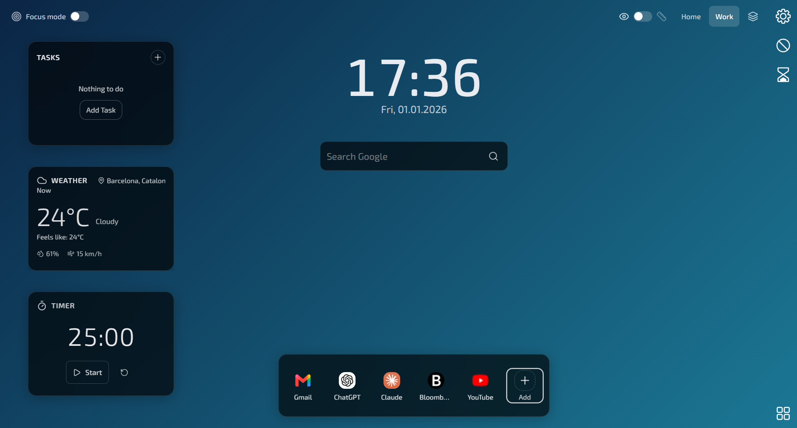

Product preview
One calm screen
for the next thing.
This is the default StrideTab workspace: an ocean background, the essentials in reach, and enough space to make it yours.

Real StrideTab workspaceClock · Search · Quick links · Tasks · Weather · Timer